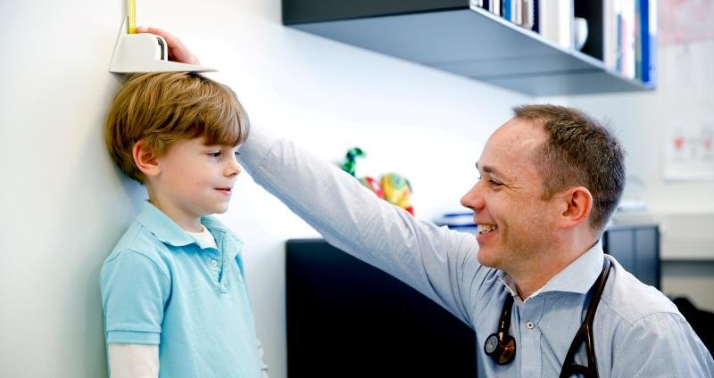
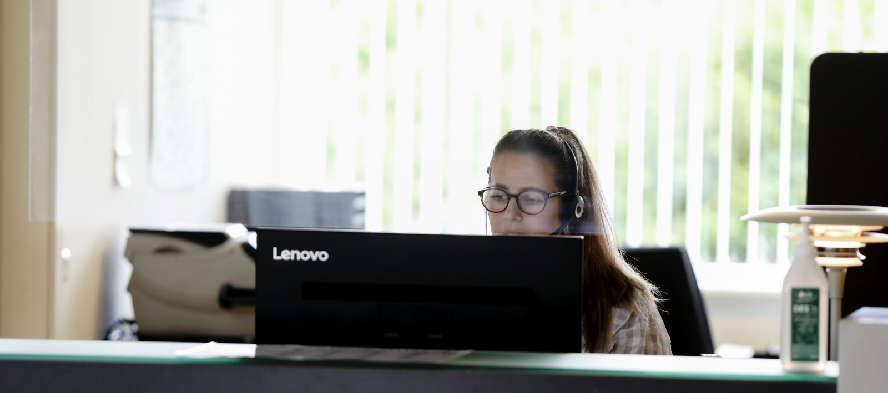

Konsultation & tidsbestilling
Vælg den konsultationsform, der passer til dit behov — fysisk fremmøde, quicktid, telefon, video eller en skriftlig besked.

Sådan bestiller du tid
Du kan bestille tid til konsultation hos læge, sygeplejerske eller bioanalytiker. Nemmest er det at klare det selv online — vælg den måde, der passer dig bedst:
Selvbetjening · på computer
Log ind med MitID på Selvbetjening og bestil tid direkte fra din computer. Samme sted kan du forny recept og skrive til os.
Åbn SelvbetjeningMin Læge · på mobil
Foretrækker du mobilen, anbefaler vi appen Min Læge — log ind med MitID én gang, derefter bruger du bare pinkode eller fingeraftryk. Book tid døgnet rundt, se og aflys dine aftaler, forny recept og skriv til os.
Hent Min LægeRing til os
Ring på 75 89 18 11 på hverdage kl. 9.00–14.00, hvor sekretærerne tager imod tidsbestillinger.
Godt at vide, når du bestiller tid
- Beskriv kort, hvad det drejer sig om, når du bestiller.
- Brug ikke dit eget cpr-nr. til at bestille tid til dine børn — kontakt sekretæren for at oprette børnene til e-service.
- De fleste årskontroller ved egen læge skal forudgås af en tid hos sygeplejersken — book den gerne mindst 1 uge før lægetiden.
- Kørekortsattest: mød 10 minutter før din tid, så du kan nå at udfylde spørgeskema og betale.
- Bestil ikke lægeerklæringer, attester eller akutte konsultationer via tidsbestillingen — ring i stedet i telefontiden på 75 89 18 11.
Telefonen — time for time
Mellem kl. 8.00 og 9.00 er telefonen forbeholdt akut sygdom, der kræver lægekontakt samme dag. Fra kl. 9.00 sidder op til fem sekretærer og en til to lægestuderende klar til at hjælpe med tider, svar og alt det praktiske.

Telefontider · man–fre
- 8.00–9.00Kun sygdom, der kræver lægekontakt samme dag, og anmodning om sygebesøg.
- 9.00–14.00Tidsbestilling, prøvesvar og øvrige henvendelser.
- 14.00–16.00Akutte henvendelser på 75 89 18 11.
- Efter 16.00Lægevagten: 70 11 31 31 · Livsfare: 112
Quicktid — hurtig hjælp til én ting
En quicktid er en hurtig tid til én kort og ukompliceret problemstilling — fx ondt i halsen, et udslæt eller en vandladningsgene.
Sådan fungerer det
- Mød op og scan dit sundhedskort (eller kort i app), og tjek ind hos sekretæren kl. 8.45–9.30.
- Herefter bliver du set af en læge eller sygeplejerske.
- Der kan være lidt ventetid, da patienterne tages i rækkefølge.
Videokonsultation
Nogle henvendelser kræver ikke fysisk fremmøde. Med en videokonsultation kan du tale med lægen direkte fra din telefon eller tablet via Min Læge-appen.
- Book videokonsultationen som en almindelig tid — på Selvbetjening, i Min Læge eller telefonisk.
- Log på appen med MitID lidt før din tid og vent i den virtuelle venteværelse.
- Sørg for godt lys og en stabil internetforbindelse.
E-konsultation & receptfornyelse
E-konsultation
E-konsultationen er til korte, konkrete beskeder, der ikke haster — fx afbud til en aftale eller spørgsmål om en receptfornyelse. Du får svar inden for få hverdage.
Godt at vide om e-konsultation
- Egnet til korte, præcise spørgsmål, der ikke kræver længere udredning — fx svar på prøver eller undersøgelser. Har du brug for et mere uddybende svar, så bestil en fast tid.
- Må ikke bruges til akutte henvendelser — der kan være nogle dages svartid. Medicin- og tidsbestilling har egne moduler.
- Er din læge på kursus eller ferie, lukkes der for e-konsultationen; den åbnes igen, når lægen er tilbage.
Receptfornyelse
Du kan forny din faste medicin på Selvbetjening eller i Min Læge — dog ikke medicin, der udleveres via en sygehusafdeling.
- Log ind på Selvbetjening eller Min Læge og vælg receptfornyelse.
- Vælg den medicin, du skal have fornyet.
- Recepten sendes elektronisk til dit apotek.
Godt at vide om receptfornyelse
- Der kan være et par dages ekspeditionstid — bestil i god tid, men ikke for tidligt, da anmodninger kan blive afvist. Hold øje med, at du får en bekræftelse.
- Er dine faste ordinationer ikke tilgængelige, så kontakt sekretæren.
- Vanedannende medicin skal fornyes ved fremmøde — husk årlig kontrol ved din faste læge.
- Er medicinen ordineret på en sygehusafdeling, skal du kontakte afdelingen.